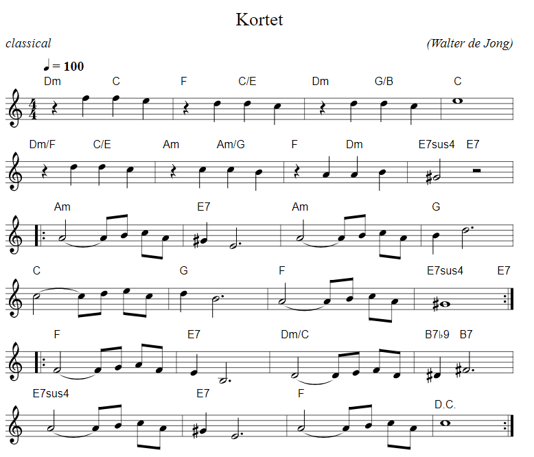

https://editor.drawthedots.com/?t=X%3A%201%0AT%3A%20Kortet%0AO%3A%20Walter%20de%20Jong%0AM%3A%204%2F4%0AL%3A%201%2F8%0AQ%3A%20%20100%0AK%3A%20C%0AR%3A%20classical%0A%22Dm%22%20z2%20f2%20%22C%22%20f2%20e2%20%7C%22F%22%20%20z2%20d2%20%22C%2FE%22%20d2%20c2%20%7C%20%22Dm%22%20z2%20d2%20%22G%2FB%22%20d2%20c2%20%7C%22C%22%20e8%20%7C%0A%22Dm%2FF%22%20z2%20d2%20%22C%2FE%22%20d2%20c2%20%20%7C%22Am%22%20z2%20c2%20%22Am%2FG%22%20c2%20B2%20%20%7C%20%22F%22%20z2%20A2%20%22Dm%22%20A2%20B2%20%7C%22E7sus4%22%20%5EG4%20%22E7%22%20z4%7C%0A%7C%3A%22Am%22%20A4-%20AB%20cA%20%7C%22E7%22%20%5EG2%20E6%20%7C%22Am%22%20A4-%20AB%20cA%20%7C%22G%22%20B2%20d6%20%7C%0A%22C%22%20c4-%20cd%20ec%20%7C%22G%22%20d2%20B6%20%7C%22F%22%20A4-%20AB%20cA%20%7C%22E7sus4%22%20%5EG8%20%22E7%22%20%20%3A%7C%0A%7C%3A%22F%22%20F4-%20FG%20AF%20%7C%22E7%22%20E2%20B%2C6%20%7C%22Dm%2FC%22%20D4-%20DE%20FD%20%7C%22B7b9%22%20%5ED2%20%22B7%22%20%5Ef%2C6%20%7C%0A%22E7sus4%22%20A4-%20AB%20cA%20%7C%22E7%22%20%5EG2%20E6%20%7C%22F%22%20A4-%20AB%20cA%20%7C!D.C.!%20c8%20%3A%7C
X: 1
T: Kortet
O: Walter de Jong
M: 4/4
L: 1/8
Q: 100
K: C
R: classical
"Dm" z2 f2 "C" f2 e2 |"F" z2 d2 "C/E" d2 c2 | "Dm" z2 d2 "G/B" d2 c2 |"C" e8 |
"Dm/F" z2 d2 "C/E" d2 c2 |"Am" z2 c2 "Am/G" c2 B2 | "F" z2 A2 "Dm" A2 B2 |"E7sus4" ^G4 "E7" z4|
|:"Am" A4- AB cA |"E7" ^G2 E6 |"Am" A4- AB cA |"G" B2 d6 |
"C" c4- cd ec |"G" d2 B6 |"F" A4- AB cA |"E7sus4" ^G8 "E7" :|
|:"F" F4- FG AF |"E7" E2 B,6 |"Dm/C" D4- DE FD |"B7b9" ^D2 "B7" ^f,6 |
"E7sus4" A4- AB cA |"E7" ^G2 E6 |"F" A4- AB cA |!D.C.! c8 :|